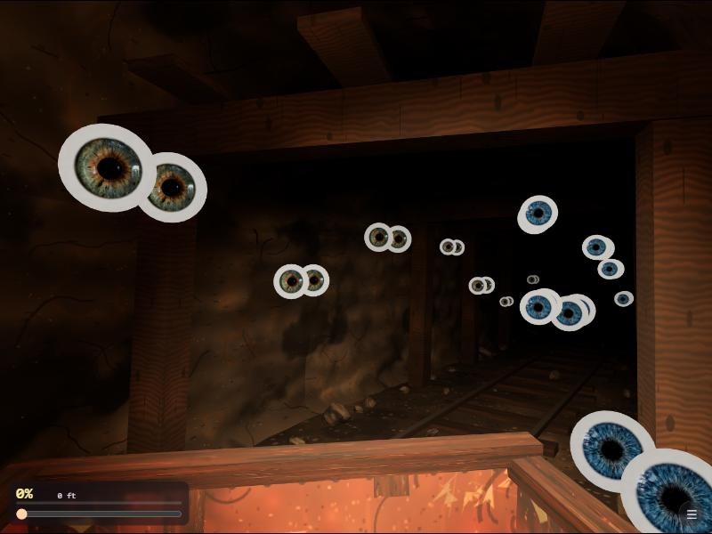
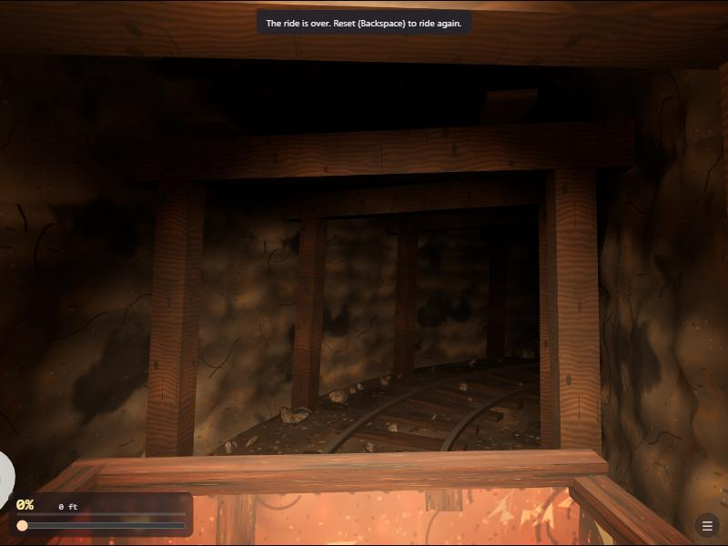

Series: CT72 Eyes · Version: A5 · Date: 2026-11-19 · Built from: CT72.A4.Eyes (copied; A1-A4 unchanged; read CT72.A4.Eyes/CT72.A4.Eyes.md for A4 (the timber fix, the steady eyes, the frame-rate work, the corner) and from there A3, A2, A1 and CT61.B6.Darkride.md) · Art project (Harness 7).
Open issues and questions: ISSUES.html. To pick this project up in a later chat, point it at this file.
© 2026 Michael Wahrman. All rights reserved.
- Please use Sonnet
- Please review CT72.A4.Eyes.md
- Dust can default off, I dont see it.
- The track should be visible even in the dark part
- Mine car can be visible, maybe an option, default to visible
- Not necessary to fade to black
?dust=1 or U turns it on).?car=0 to start without (the V key looks from behind and above, where the whole car shows). Your seat is 10 cm lower (1.45 m, was 1.55) so the rim is in the picture; at 1.35 the car filled the bottom third and hid the rails. The small light by the camera lights the car so it is not a black shape; it goes off when the car is hidden or Lights is on.?fade=1 brings the A4 fade back. The corner stays. The eyes in the dark now run to the end of the last straight (28 pairs, was 26), so there are eyes close ahead where the ride stops.?sound=0)node --check on every changed script; no console errors.?fade=1), not deleted.As A4's, renamed CT72.A5.Eyes_*.js. Changed: CT72.A5.Eyes_main.js (Car, dust and fade defaults, the car light, the stronger track light) · CT72.A5.Eyes_cars.js (seat height) · rooms/dark.js (eyes to the end) · index.html (Car button and help row). URL options: as A4's plus ?car=0, ?dust=1, ?fade=1.

